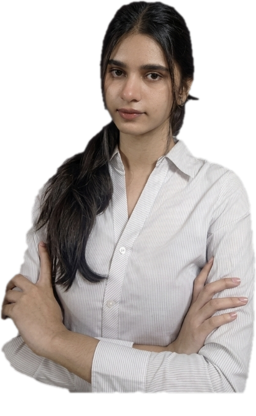

〈〉
Frontend
Building responsive web interfaces with clean structure and styling.

Hello, I'm
I enjoy turning ideas into useful digital experiences, exploring Python and web development, and building technology that solves real-world problems.
I'm a Computer Science and Engineering student at Asansol Engineering College, interested in frontend development, Python, and practical problem-solving.
I like learning by building. From machine-learning experiments to ideas for smarter education, I'm working on strengthening my technical skills and creating projects with purpose.
A foundation in development, with a mindset to keep improving.
Building responsive web interfaces with clean structure and styling.
Writing code, solving problems, and exploring data-driven applications.
Learning the workflow behind preprocessing, model training, and prediction.
A selection of work that brings together learning and real-world problem-solving.
MACHINE LEARNING · STREAMLIT
An interactive prediction app built around a Naive Bayes model, with user inputs transformed into model-ready features. A practical project for learning the end-to-end ML workflow and deployment interface.
COMPUTER VISION · OPENCV
A Python program that converts an image to grayscale, finds human faces with a Haar Cascade classifier and draws a box around each one.
Asansol Engineering College · West Bengal
Latest SGPA: 8.39RSVM · 89.6%
Team presentation qualified · Smart Education theme
I'm interested in internships, collaborations, and opportunities to learn by building.